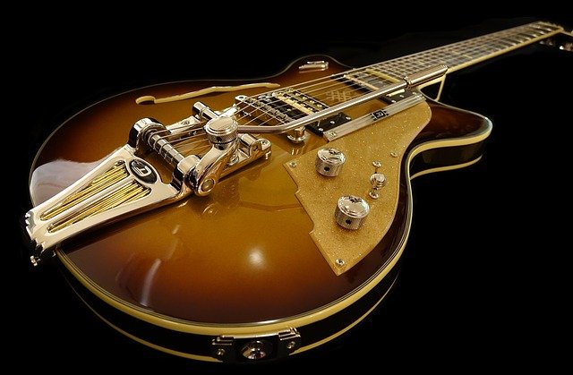

Bem-vindo à melhor página de instrumentos

Aprender a tocar qualquer instrumento é muito difícil e exige dedicação
mas assim como andar de bicicleta, quando se aprende, não dá para se esquecer
As guitarras já têm 5 mil anos de história onde tudo teve origem num instrumento Espanhol chamado “vihuela”, que era a junção de “ud” e “cozba” que eram instrumentos ainda mais antigos muito populares no Oriente e no império Romano respetivamente.
recomendações de guitarras:
- Fender Stratocaster.
- Fender Telecaster.
- Gibson Les Paul.
- Gibson SG.
veja sobre Piano!
Autor: Caio Marins
Instituição de Ensino: ETEC Albert Einstein